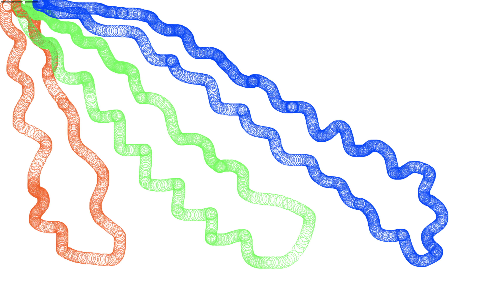

This is what our sketch pad may look like:

Right now, you should just see a blank page with a color picker at the top left.
We'll only be modifying assets/scripts/main.js for this hands-on. It may feel a little overwhelming to see the starter code; however, mostly each part only requires one line of code (well, at most two, unless you're feeling fancy and would like to code more).
Let's take a look at the mouseMove() function and remind ourselves that it will run every time browser sees the mouse moves on the canvas. While the browser runs the function, it also provides us with an event loaded with information like mouse positions that we can get with event.clientX and event.clientY.
We've provided you with two functions (1) fillCircle() to draw a solid circle and (2) strokeCircle() to draw a circle outline. If you'd like to see how these functions work, you can read the code at the bottom of the file, but you don't need to understand that code to complete the lab.
See how can you use those functions and values to your advantage to paint some circles on the canvas under your mouse cursor.
Look for "Step 1" in the code comments to make your changes.
Now some painting should appear under your mouse cursor!

It could be more visually exciting if we can vary the color being drawn on the canvas!
Part 1: Store the value from the color picker in a variable named color.
Part 2: Set the fill color and the stroke color of the canvas with context.fillStyle and context.strokeStyle.
Look for "Step 2" in the code comments to make your changes.
Now you can pick a new color and you should be able to draw with the new color.
Look for "Step 2" in the code comments to make your changes.
So far all the circles we've been drawing have a uniform radius, would it be awesome if they change up a little?
Part 1: Imagine the radius of the circles change over time. Let's add a variable called counter which is a number that will increment every time the mouse moves.
Part 2: Let's come back to the drawing section we did earlier in part 1. The fillCircle() and strokeCircle() has a third (optional) argument that specifies the radius, so that we can run fillCircle(40, 20, 8) to draw a circle at the coordinates (40px, 20px) with a radius of 8px. Let's try to specify the circle radius with the value returned from radiusFunction1() and see what result it gives us. Use the counter variable as the argument for radiusFunction
With radiusFunction1(), you may get a similar effect as shown below,

You've reached the end of the lab! However, do check out the other radiusFunction?() which will give some different effects. Notice that these functions share similar parameters; you'll only need to change the function name without tweaking the arguments to see the different looks. If you're super interested in playing a little more, you should try to experiment and write your own radius functions!